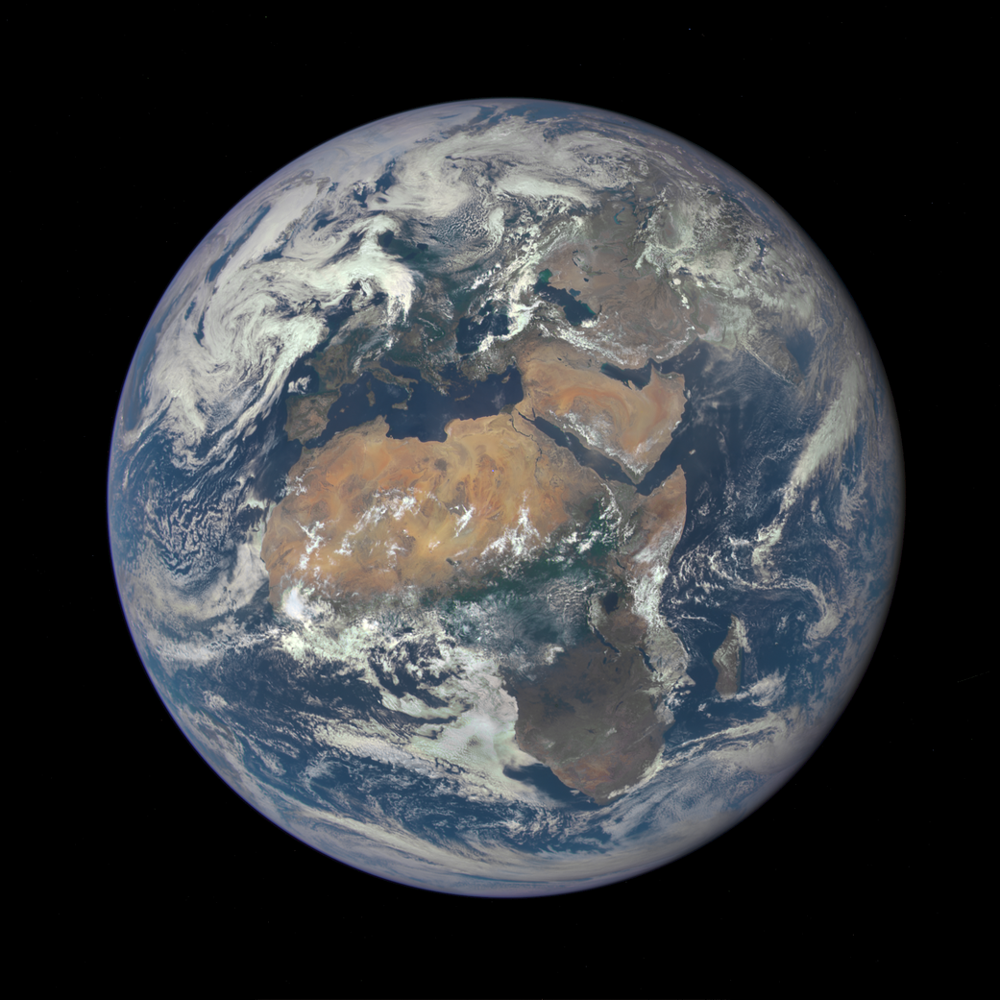
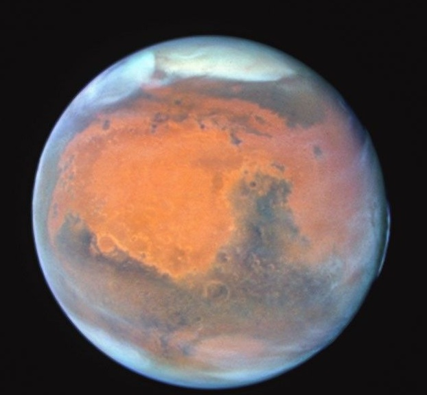
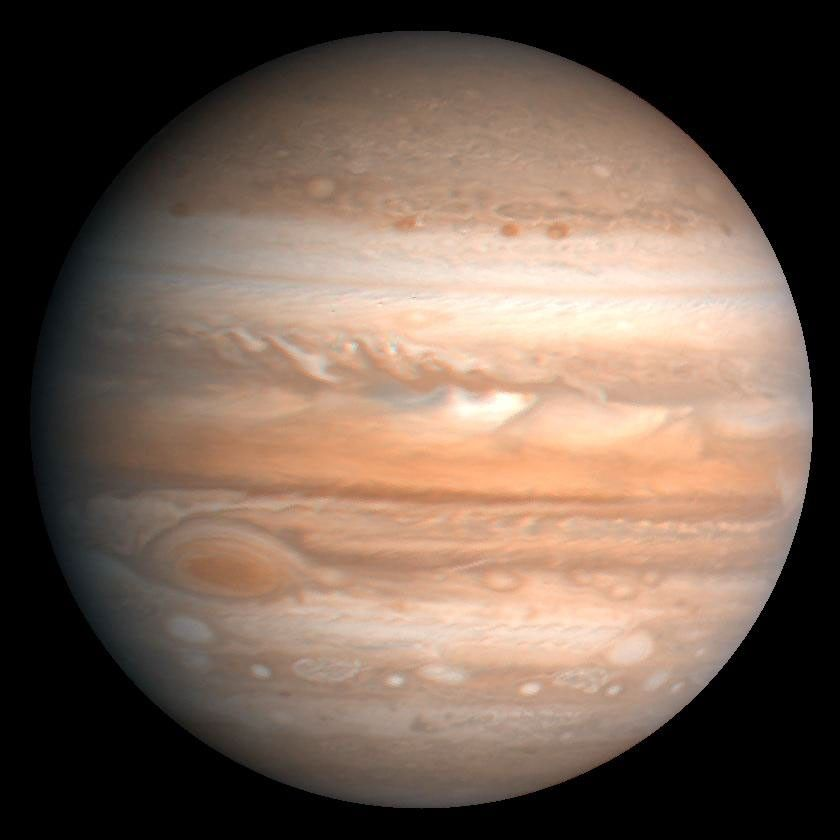
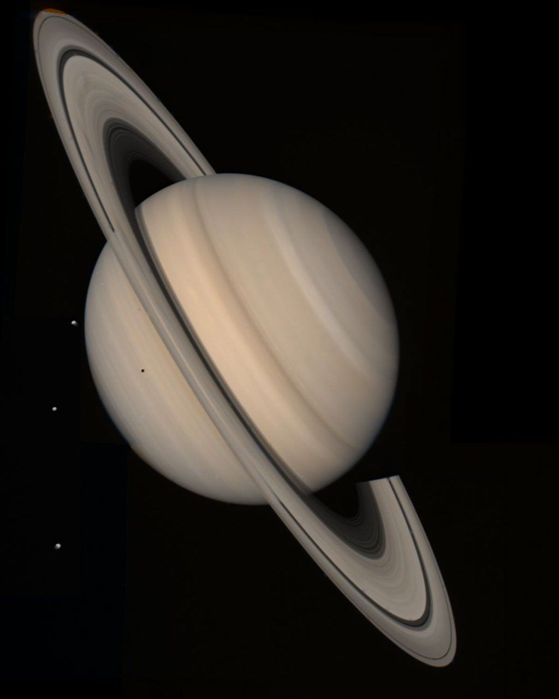
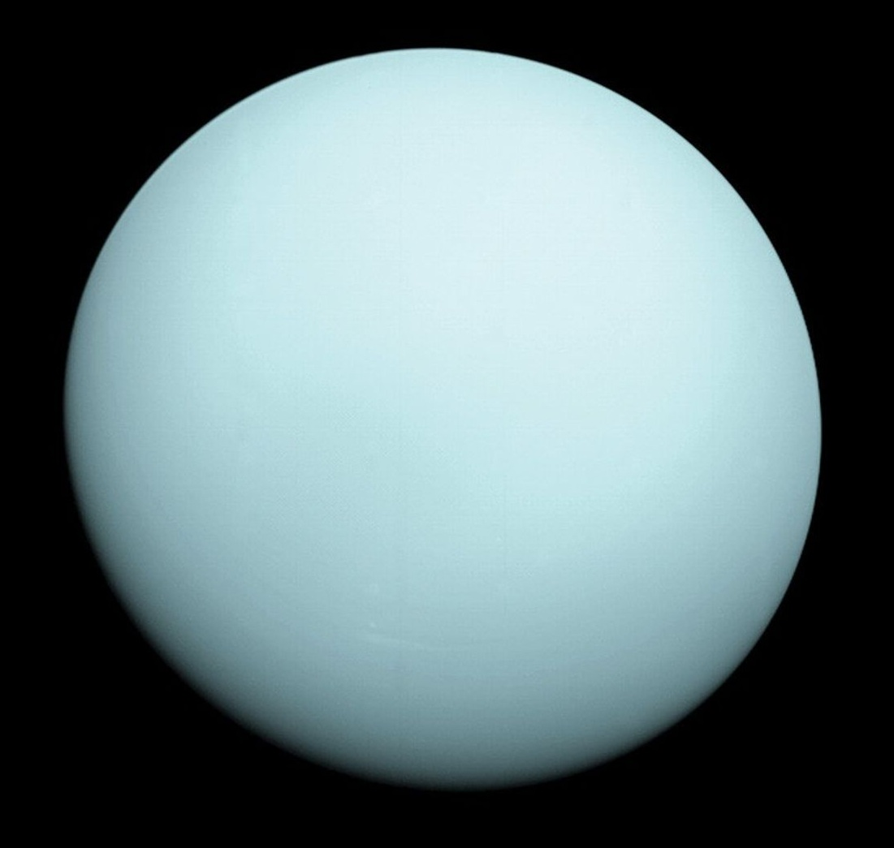
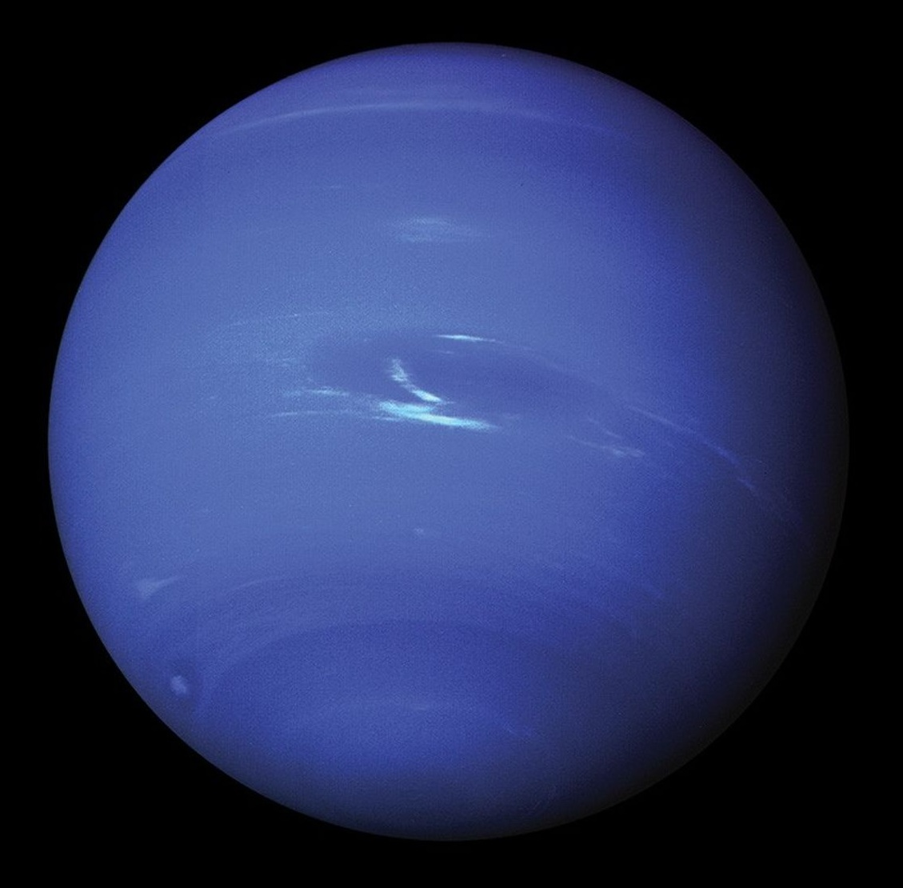

¿Cómo se ven los planetas?
Todos los planetas tienen nombres de dioses romanos, excepto Urano, que proviene de la
mitología griega.
sentence placeholder

NASA's Spacecraft MESSENGER
Curiosidad: Aunque es el más cercano al Sol, no es el más caliente. Venus,
con su densa atmósfera de dióxido de carbono, atrapa el calor y tiene temperaturas mucho más altas.
sentence placeholder

NASA/JPL-Caltech
Curiosidad: Tiene una rotación retrógrada, lo que significa que gira en
dirección opuesta a la mayoría de los demás planetas.
sentence placeholder

NASA camera on the Deep Space Climate Observatory (DSCOVR)
Curiosidad: Nuestro hogar y el único con agua líquida en la superficie.
sentence placeholder

NASA, ESA, STScI; Image Processing: Joseph DePasquale (STScI)
Curiosidad: Su color rojo se debe al óxido de hierro en su superficie.
sentence placeholder

NASA/JPL/USGS
Curiosidad: Su gran mancha roja es una tormenta que ha estado ocurriendo
durante al menos 300 años.
sentence placeholder

NASA/JPL-Caltech
Curiosidad: Sus anillos están compuestos de partículas de hielo y roca, y
son tan anchos que podrían caber varios planetas Tierra dentro de ellos.
sentence placeholder

NASA's Voyager 2 - NASA/JPL-Caltech
Curiosidad: Fue el primer planeta descubierto con la ayuda de un telescopio.
sentence placeholder

NASA's Voyager 2 - NASA/JPL-Caltech
Curiosidad: Su atmósfera es la más fría del sistema solar y tiene vientos
muy fuertes.